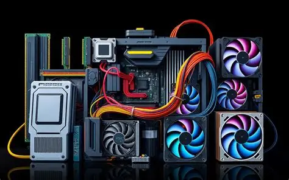
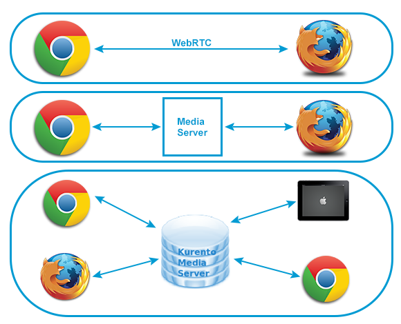

HARWARE

Los servidores web son los que "entregan" las páginas que ves en tu navegador. Los más utilizados son:
- Apache HTTP Server: El más clásico y compatible. Es código abierto y muy flexible.
- Nginx: Conocido por ser muy rápido y manejar muchísimas conexiones al mismo tiempo. Muy popular hoy en día.
- Microsoft IIS: Exclusivo para Windows Server; se integra perfecto con herramientas de Microsoft.
- LiteSpeed: Muy eficiente y diseñado para acelerar el rendimiento de sitios web pesados.
SOFTWARE

El hardware es la parte física. A diferencia de una PC normal, el de un servidor está diseñado para estar encendido 24/7.
- CPU (Procesador): Suelen usarse procesadores multinúcleo (como Intel Xeon o AMD EPYC) para procesar miles de peticiones simultáneas.
- Memoria RAM: Se utiliza memoria ECC (Error Correcting Code) para evitar fallos de sistema. Se requieren grandes cantidades (32GB, 64GB o más).
- Almacenamiento: Discos de alta velocidad (SSD o NVMe) configurados en RAID para que, si un disco falla, la información no se pierda.
- Chasis/Rack: Estructuras metálicas diseñadas para montarse en gabinetes dentro de centros de datos con refrigeración especial.
FORMAS DE TRABAJO

Es el ciclo de funcionamiento básico:
- Petición (Request): El usuario (cliente) escribe una URL en su navegador.
- Procesamiento: El servidor recibe la orden, busca el archivo en su disco duro o consulta la base de datos.
- Respuesta (Response): El servidor envía los datos (HTML, imágenes) de vuelta al navegador.
- Visualización: El navegador interpreta esos datos y muestra la página web.